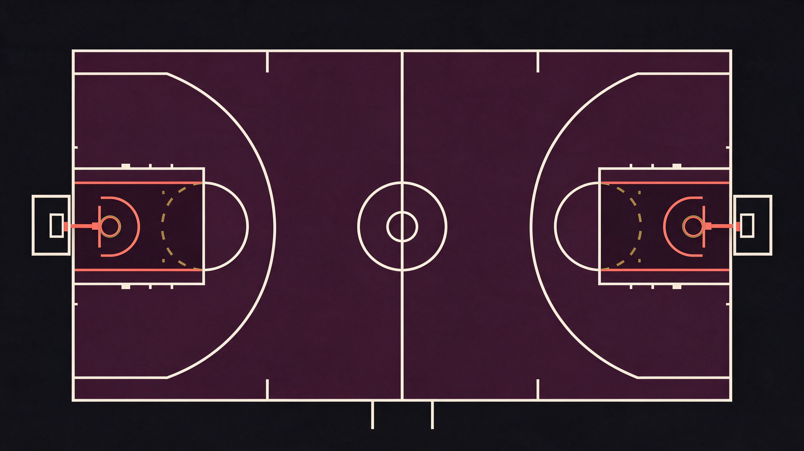

Strategic execution
Reading the floor and making the next decision better.
A basketball profile built around communication, split-second execution, conditioning, and team-first decisions.
court vision
A full-court read of the spaces, angles, and decisions that shape every possession.
Reference source ↗
Reading the floor and making the next decision better.
Turning daily work into composure late in the game.
Communication, spacing, and shared responsibility.